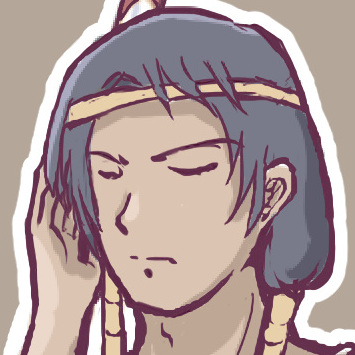
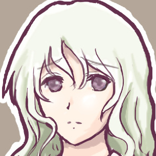
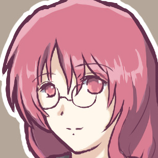
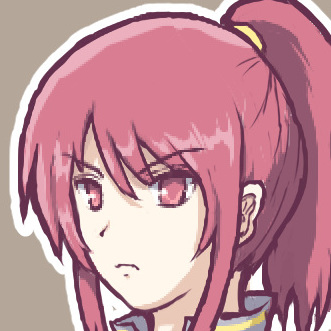
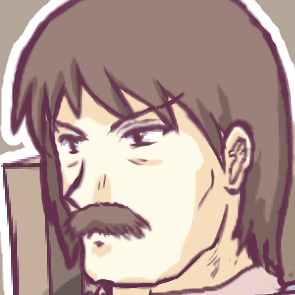
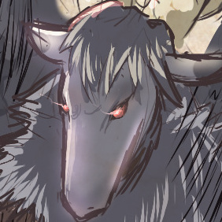
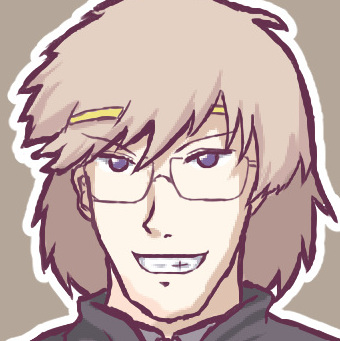
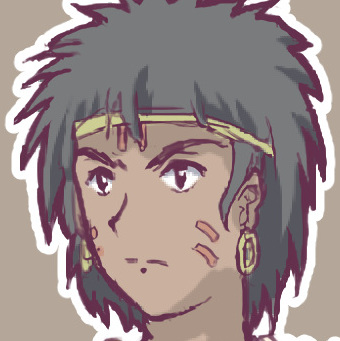
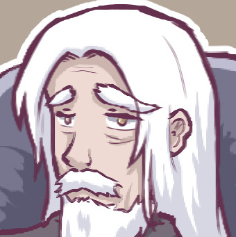

ようこそ、ここは1巻の人気投票の結果発表ページです！
まだ第1巻だというのに、人気投票では多くの読者さまからたくさんのコメントをいただきました！
投票してくださったみなさま、本当にありがとうございます！
今回の1位は、プレイヤーキャラクターの『ブリンク』！
最終的にパーティーを離れたことも含め、最初から最後まで大活躍していましたね。
1巻の物語を思い出しながら、みなさまのコメントやPC、NPCからの一言を、ごゆっくりお楽しみください。
|
旅団世界TRPG 第1巻『緑の旅団と黒ヤギの悪魔』 人気投票 結果発表！ |
| ◆第 1 位◆ ブリンク / カガクの魔術師 50 点 | |
|  |
ブリンク 「みな、ありがとう。オレ、嬉しい。我が神も『念願の1位！ 感無量ニャー！』と満足げだ。これから先も、旅を続ける皆を見守ってやってほしい」(PLより) |
|
【ブリンクへのコメント】 ●第一話の事故からの、ブリンクの人の好さと奇抜すぎる戦い方に惚れました！ 特に偽ティセとの会話シーンがめちゃくちゃ燃えました！ ●カガク万能！ ●団長殺害からはじまる、一本のストーリーがとてもカタルシスを感じました。別れも鮮やか！ ●ブリンクに始まりブリンクに終わる一巻でしたね。キャラクター変更後も、ホームの街に帰る度に出てきて欲しいなぁ。 次巻のキャラは今までと大分違いそうですけど、楽しみにしてます(でも軍師なのは変わらないんだろうなと) ●動機付けられた行動が素晴らしいですね！ ンクさん時代から好きです ●黒幕すら助けようとする姿勢が良かった。 ●詠唱からの丁寧な魔術描写が面白かったです。カフェでの接触以降の黒ヤギへの語り掛け、激怒する二人との差別化に引かれました。 ●先住民族的な喋り方ですが割と論理的なところや、相手の考え方を尊重するなどのギャップがとても良かったです！ ●喋るのがカタコトなのにこんなに知的なキャラというのが今まであっただろうか……卒業もきれいでした！ ●これを第一章とするならば完全に章の主人公でしたね……。 ●3話の偽ティセとのやりとりがかっこいい！ 特殊射撃（瓶）の発想がとても好きです。ひらめきが密林で不通になったのが忘れられない。 ●3話を通してみるとすごく主人公力の高いキャラだったと思います。1話目を見た時点ではカタコトもあってオモシロ系のキャラと思いましたが、ここまでかっこいいキャラになるとは！ ●おお、ブリンクよ！ 再会の時を待ちわびているぞ！ ●魔法（油引火）にめっちゃ笑いました。 | |
| ◆第 2 位◆ リゼット / 半獣人の騎士 34 点 | |

|
リゼット 「みなさん投票ありがとうございます！ あんな感じに着飾るのは初めてだったので、ちょっと楽しかったです。でもあのお店にはもう行きたくない！ 絶対行きませんからね！」(PLより) |
|
【リゼットへのコメント】 ●みんなのまとめ役兼ツッコミ役として、そしてティセとの会話シーン等で、まさに主人公！なキャラでした。 ●正統派キャラは重要です。人気が出ないことも多いですが、PLがいいなら壊れずに進んでほしいです。 ●節目節目の情報整理のお陰で注意深く読み進めることができました。ケモ耳、盾、ツッコミのどれも冒険に欠かせない要素でした。 ●頼まれたら断れないところや、正義感で熱くなるところなど主人公！っていう感じがしました。 ●夜のお店での恥ずかしそうな様子が……いいですね……。 ●良識あるお姉さんという感じで素敵！ このメンツの中で充分キャラも立ってる！ ●違和感なく優等生ムーヴができる唯一の人員になってしまった事もあり完全にＰＣ側の進行役兼苦労人ポジションに落ち着いていて途中「頑張れ……超頑張れ」と内心応援してた私がいます。 ●まじめでかわいい！ 物語にはなくてはならない常識人なところが好きです ●ティセを試験まで引率していたシーンが非常に印象に残りました。騎士という「誰かを守る」立場と相まって、ティセを助けたいという強い動機につながったように思います。リーダーとしてもすごく良いキャラでした！ ●新旅団のダンチョーになるのかな？ オーボスさんの行動には手を焼くでしょうが、温かく見守ってあげてくださいね。 ●けもみみ真面目騎士ほんと好き。 | |
| ◆第 3 位◆ ノエル / 人間の薬師 27 点 | |
|
ノエル 「ボクが３位？！ すっごく嬉しいな～！ ボクに投票してくれたみんな、ありがとう！ お礼に新しく考えた“治療”をサービスするね！！」(PLより) |
|
|
【ノエルへのコメント】 ●かわええ。くるくると動き回るのをずっと眺めてたい系。あと時々なでくり回したい。人懐っこい猫的な意味で。 ●不運ではないような（アイデンティティ否定） ●不幸が冴え渡り、オーボスさんの気力が漲りました。 ●ダイスへの信頼感がすごいです。 ●リゼットの酒場提案をいけないお店に上書きしたのは素晴らしい提案だったと思います。出目へのリアクションには何度も笑いました。 ●オーボスのメイン気力供給源でしたが、回復量の出目は割と高かった印象です。 ●何でも屋さん、PTのバランサーだなあと！ 続刊でもリゼットとのコンビに期待！ ●中の人の予想が正しければ、相変わらずのダイス目で何よりです。 ●サポートが決まると戦闘シーンがいっきに熱くなりました。オーボスの必中回復からの流れがかっこよかったです ●軽いノリの会話が楽しく、読んでて楽しいキャラでした！ リゼットと一緒にお店で接客したり、ノートを奪ったり、ティセの治療にあたったりと色々な立ち回りをしていたのが印象的でした。 ●ノエル、いつも治療お疲れ様！ ティセへの全力治療、お見事でした。 ●絶妙なタイミングでファンブル出したりクリティカル出したり、本当に出目に愛されてるなと思いました（笑） | |
| ◆第 4 位◆ オーボス / ドワーフの大工 21 点 | |
|
オーボス 「『投票してくれてアリガトウ！』とでも言うと思ったか？ 世界的建築家にして大工の棟梁オーボスだというのに票が足りんぞ？（机バンバンバン） ワシの顔に泥を塗った責任は誰が……っていうかＮＰＣ達と僅差過ぎじゃぞ！？」(PLより) |
|
|
【オーボスへのコメント】 ●オーボスの無軌道な言動の アレ、イラ つかない絶妙なプレイングでした！ ●2話でのヒロインムーブはどういう事なの……。どこかの商人フェアリーちゃんでもあそこまでのヒロイン力はなかった気がするなの。時代はロリプニではなく髭モジャなの？ ●ネタキャラRPが面白かった。 ●ロリプニドワーフと聞く度に安心感がありました。要所で周囲の警戒を忘れないのはとてもかっこよかったです。 ●キャラクターが事件を調べようとしてなくても、敵の本拠地を暴いたり禁書を持ってきたりするのはベテランTRPGプレイヤーとしての勘なのでしょうか……流石の一言です。 ●積極的に他ＰＣに絡みに行くタイプでなかったために扱いづらさが目立っていたイメージですが、要所要所でファインプレーが目立つ辺りＧＭ共々流石だな、と感じました。これからも応援しております。 ●言動が常に面白いうえに戦闘の見せ場もあり、一番好きでした。どこに転んでもおもしれー男…… ●戦闘における火力役として大活躍！ あと読んでて感じる中の人の配慮のすごさ。ルーニー的な役回りって加減が難しそうなのですごいなあと思います。中の人は理知的に「町も探索すべき」と思ってそうなのに、キャラにはロドバ探しという動機を持たせるあたり「こいつはできる…」と思いました。 ●やっっぱり、オーボスだな！！ ●終始「なんだこいつ…」ってムーヴのオーボスでしたが、必要な時はしっかり仕事して変な行動でお話に緩急付けてくれるのでカッコいい〜って思いながら読んでました。 | |
| ◆同率 5 位◆ ティセ / テレサの娘 18 点 | |
|  |
ティセ 「こんなに票を入れてもらってありがとう……これからも登場できるようにがんばるね……！ 下半身は……戻るのかなあ？」 |
|
【ティセへのコメント】 ●SmokingWOLFさんのヒロイン母娘は、たいてい娘が薄幸で健気なような覚えがあります。治るころ30歳になってたらそれはそれで可愛いのでは。 ●半分ヤギになったけどかわいいねえ。 ●再登場期待しています！ ●ティセ、ええ子や。 | |
| ◆同率 5 位◆ ＧＭ / ゲームマスター 18 点 | |
|
|
ＧＭ 「たくさんのご感想コメント、本当にありがとうございます！ みなさまの温かい一言を励みに、2巻以降もがんばりまーす！」 |
|
【ＧＭへのコメント】 ●今回も素晴らしいストーリー展開で、とてもワクワクドキドキしながら読み進めることが出来ました！ ●終始笑いながら見てました。 ●シル見時代からずっと楽しませていただいてます。 ●幻想譚からずっと楽しませて頂いています。これからも頑張ってください！ ●設定等が練られていて、第二話以降の続刊が気になる内容でした ●細部まで詰めたシナリオ、PLを楽しませる要素が素晴らしかった ●ルール及び舞台の作成、リプレイ編集と大変な作業のなか面白い作品をありがとうございます。 ●自由度の高いシナリオと高いアドリブ力…… ●片道勇者買ったついでに色々見てたらリプレイ発見してKindle Unlimitedだったし読んでみたら、とても面白かったです！ ●シナリオの作成から進行、出版と諸々の作業本当にお疲れ様でした。 ●はじめてのTRPG作品でしたがとても面白かったです！ プレイヤーのみなさんと物語を作っていく雰囲気がとても楽しそうでした。次回も楽しみです！ ●プレイヤーの様子を見てバランス調整したり柔軟な遊び方を見てTRPGって楽しそう！ ってなりました！（遊ぶ仲間はいませんが……） | |
| ◆第 7 位◆ フレア / 魔術学院の先生 16 点 | |
|  |
フレア 「票数の割にすごくたくさんのコメントをいただけてありがとうございます。え、そんな、正妻だなんて……！（頬を染める）」 |
|
【フレアへのコメント】 ●事件の処理やらされたり、偽物のせいで振り回されたり、部屋に忍び込まれたりと、まさに苦労人！ 好きですこういう脇役キャラ。 ●がんばれ正妻。誰にでも「大好き」言っちゃう旦那だから毎度嫉妬で大変かもだけど、なぁに一回押し倒して「好き」の概念上書きしてしまえば……。 ●寝てください（懇願） ●SmokingWOLFさんの作品でいう王道の幸薄い系ヒロインですね ●頑張ってる姿が健気でかわいかった！ ●学長就任おめでとうございます。ヘロヘロでクタクタなはずなのに、ハイテンションでブリンクさんをスカウトに来る姿がすごく乙女で可愛いです。お幸せに！ ●不幸というか不憫な感じで好きです ●再登場期待しています！妹ちゃんとの絡みも是非。 ●名前ありモブ→容疑者→不憫な被害者→頼れる協力者→ブリンクの正妻 | |
| ◆第 8 位◆ バーナ / 魔術学院の学生 14 点 | |
|  |
バーナ 「え、あたしにユリ展開とか期待されてんの……ティセにはそんな変なことしないって！ ピュアだから！ まあデートくらいは……するけど」 |
|
【バーナへのコメント】 ●めっちゃ好み。いざゆけ、百合の道(違)。姉ちゃんの旦那を寝取って【規制】という道も…(※ない)。 ●これからもティセちゃんと仲良くしてください。出来れば百合方面で！ ●出番は少ないですが好みなキャラです。根はまじめそうなので更生の機会があることを願っています。 | |
| ◆第 9 位◆ ギリアム / 亡くなった団長 12 点 | |
|  |
ギリアム 「なに、俺が妻より支持されているだと……！？ みんなの期待に応え、俺はいつか帰ってきてみせるぞ！」 |
|
【ギリアムへのコメント】 ●全てはこの人がチュートリアルで死んだことから始まりました。それがこんな結末を迎えるとは。 ●最後の出番後の活躍が気になります。 ●魔界に落ちたことで、実際に死んだところを見ていないから、再登場の機会があるのでは？ と少し期待しています！ ●サンプル読んだ後であらすじを読んだら一層引き込まれてしまったのは間違いなくこの人の仕業です。 ●団長をうっかりやってしまった1話目から3話目までよく話を繋げたなあと、GMのシナリオ構成力も含め読んでて本当に楽しめました。最後に娘にかっこいいところを見せられて良かったね！ | |
| ◆第 10 位◆ テレサ / 団長の妻 8 点 | |

|
テレサ 「旦那が死んだときはさすがにちゃんと動揺してたわよ！ でも旦那がいなかったらいなかったで喜んじゃう奥さまも意外と多いってことは……忘れないで？ フフ」 |
|
【テレサへのコメント】 ●SmokingWOLFさんのヒロイン母娘は、たいてい母が若々しくておしとやかな剛の者のような覚えがあります。いずれティセもこのくらい肝が据わるのかあ……。 ●前作からの雰囲気はさすがです。事故にも動じない。 ●母は強し。 ●旦那が死んだ後の割とサラッとした対応に恐怖を感じますが、無理して塩対応してたんですよね……？(ゾンビ帰ってきた後の反応には目を瞑りつつ） | |
| ◆第 11 位◆ 黒山羊の悪魔 / 1巻のボス敵 5 点 | |
|  |
黒山羊の悪魔 「実質、白ヤギを送り届けられる確率が増えたので我の勝ちと言ってよいな！」 |
|
【黒山羊の悪魔へのコメント】 ●ヤギ形態のほうがイケメンだったぞ！ ●白ヤギさんを送り届けるためにここまで、難儀なヤツだなぁ。最終的にはPC達に白ヤギさんを託せた訳で、コイツの勝ちと言っても良いのかも？ | |
| ◆第 12 位◆ イケイメン / 魔術学院の副学長 4 点 | |
|  |
イケイメン 「こんなにイケメンなのにこんな順位なんですか……フフ、残念ですねぇッ！！（キラーン）」 |
|
【イケイメンへのコメント】 ●最初っから異形面、あれ、変換がおかしい？ | |
| ◆第 13 位◆ ノバ / ンガボボ族の青年 2 点 | |
|  |
ノバ 「俺、こんなに人気ない、初めて知った。貴重な票、ありがとう！」 |
|
【ノバへのコメント】 ●オーボスに懐いている姿がとても微笑ましかったです。 | |
| ◆第 14 位◆ フアーン / 魔術学院の学長 1 点 | |
|  |
フアーン 「おお……ゴリラにも入らなかった1票がワシにじゃと……！ 近いうちに永遠の休みになりそうじゃ」 |
|
【フアーンへのコメント】 ●お疲れ様でした。しばらくはゆっくりと休んでくださいね。 | |
| ◆第 15 位◆ ゴリラス / 自警団の隊長 0 点 | |

|
ゴリラス 「我の得票数……ゼロ？ ゼロぉ！？ これは一大事ですぞ！！ 我はモブのゴリラではありませんぞーヌアアー！！」 |
| ◆その他◆ | |
|
【その他キャラへのコメント】 ●【魔界の王】魔界の王さんが地上に来ていた場合、次回話はどんな感じになったんでしょうね。魔王からクエストを受注？ ●【コノ】コノに１票。ノバの根性叩き直す(と称して世話を焼く)ために君も都会に…いや何でもないです。 |